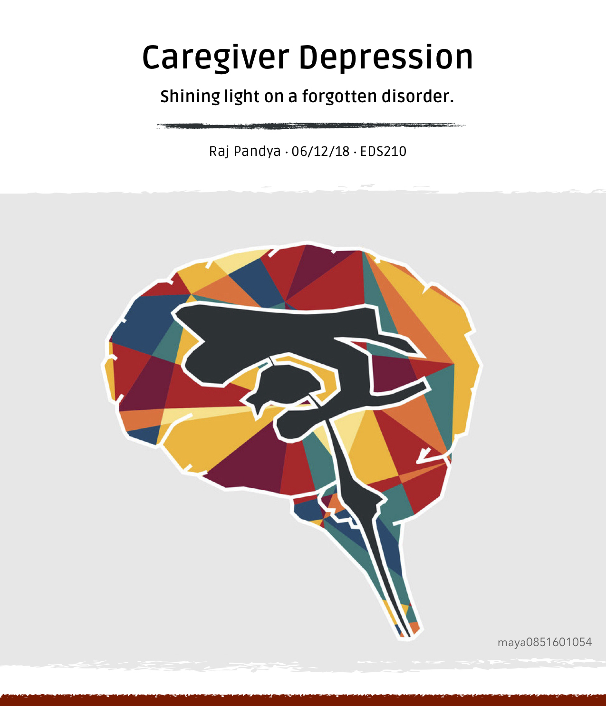

With a father in HR, my house has always been filled with leadership, management, and books of that sort. As for myself, I've loved and thoroughly enjoyed taking leadership roles in clubs and group projects since middle school. From taking on multiple ambassador roles to being a Marketing Director for UTM's Entrepreneur's Club, I have a passion for building relationships and driving teams towards success. And that is why I registered to take Communication and Conflict Resolution (EDS210) at UTM. With a desire to go into a management/leadership role in my career, I thought this course would help me strengthen my people skills. For our final paper, I wrote mine on Caregiver Depression and the types of conflicts it can cause within family, friends, and work environments.

Caregiver Depression is a subject that we need to discuss without fear. If you don't have time to read the full paper, no worries - just make time to read the Caregiver Bill of Rights on page six.
Note: Hopefully you enjoy the design of this paper as much as I do. I designed it myself! I love cleanliness, minimalism, and making things stand out while being subtle (if that makes sense).